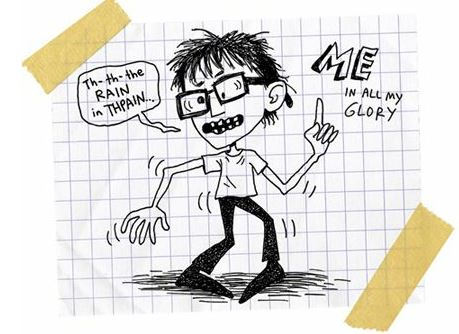
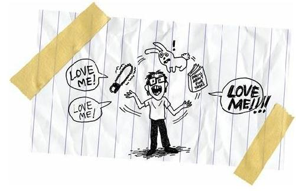

The Black-Eye-of-the-Month Club
I was born with water on the brain.
Okay, so that’s not exactly true. I was actually born with too much cerebral spinal fluid inside my skull. But cerebral spinal fluid is just the doctors’ fancy way of saying brain grease. And brain grease works inside the lobes like car grease works inside an engine. It keeps things running smooth and fast. But weirdo me, I was born with too much grease inside my skull, and it got all thick and muddy and disgusting, and it only mucked up the works. My thinking and breathing and living engine slowed down and flooded.
My brain was drowning in grease.
But that makes the whole thing sound weirdo and funny, like my brain was a giant French fry, so it seems more serious and poetic and accurate to say, “I was born with water on the brain.”
Okay, so maybe that’s not a very serious way to say it, either. Maybe the whole thing is weird and funny.
But jeez, did my mother and father and big sister and grandma and cousins and aunts and uncles think it was funny when the doctors cut open my little skull and sucked out all that extra water with some tiny vacuum?
I was only six months old and I was supposed to croak during the surgery. And even if I somehow survived the mini-Hoover, I was supposed to suffer serious brain damage during the procedure and live the rest of my life as a vegetable.
Well, I obviously survived the surgery. I wouldn’t be writing this if I didn’t, but I have all sorts of physical problems that are directly the result of my brain damage.
First of all, I ended up having forty-two teeth. The typical human has thirty-two, right? But I had forty-two.
Ten more than usual.
Ten more than normal.
Ten teeth past human.
My teeth got so crowded that I could barely close my mouth. I went to Indian Health Service to get some teeth pulled so I could eat normally, not like some slobbering vulture. But the Indian Health Service funded major dental work only once a year, so I had to have all ten extra teeth pulled in one day.
And what’s more, our white dentist believed that Indians only felt half as much pain as white people did, so he only gave us half the Novocain.
What a bastard, huh?
Indian Health Service also funded eyeglass purchases only once a year and offered one style: those ugly, thick, black plastic ones.
My brain damage left me nearsighted in one eye and farsighted in the other, so my ugly glasses were all lopsided because my eyes were so lopsided.
I get headaches because my eyes are, like, enemies, you know, like they used to be married to each other but now hate each other’s guts.
And I started wearing glasses when I was three, so I ran around the rez looking like a three-year-old Indian grandpa.
And, oh, I was skinny. I’d turn sideways and disappear.
But my hands and feet were huge. My feet were a size eleven in third grade! With my big feet and pencil body, I looked like a capital L walking down the road.
And my skull was enormous.
Epic.
My head was so big that little Indian skulls orbited around it. Some of the kids called me Orbit. And other kids just called me Globe. The bullies would pick me up, spin me in circles, put their finger down on my skull, and say, “I want to go there.”
So obviously, I looked goofy on the outside, but it was the inside stuff that was the worst.
First of all, I had seizures. At least two a week. So I was damaging my brain on a regular basis. But the thing is, I was having those seizures because I already had brain damage, so I was reopening wounds each time I seized.
Yep, whenever I had a seizure, I was damaging my damage.
I haven’t had a seizure in seven years, but the doctors tell me that I am “susceptible to seizure activity.”
Susceptible to seizure activity.
Doesn’t that just roll off the tongue like poetry?
I also had a stutter and a lisp. Or maybe I should say I had a st-st-st-st-stutter and a lissssssssththththp.
You wouldn’t think there is anything life threatening about speech impediments, but let me tell you, there is nothing more dangerous than being a kid with a stutter and a lisp.
A five-year-old is cute when he lisps and stutters. Heck, most of the big-time kid actors stuttered and lisped their way to stardom.
And jeez, you’re still fairly cute when you’re a stuttering and lisping six-, seven-, and eight-year-old, but it’s all over when you turn nine and ten.
After that, your stutter and lisp turn you into a retard.
And if you’re fourteen years old, like me, and you’re still stuttering and lisping, then you become the biggest retard in the world.
Everybody on the rez calls me a retard about twice a day. They call me retard when they are pantsing me or stuffing my head in the toilet or just smacking me upside the head.
I’m not even writing down this story the way I actually talk, because I’d have to fill it with stutters and lisps, and then you’d be wondering why you’re reading a story written by such a retard.
Do you know what happens to retards on the rez?
We get beat up.
At least once a month.
Yep, I belong to the Black-Eye-of-the-Month Club.
Sure I want to go outside. Every kid wants to go outside. But it’s safer to stay at home. So I mostly hang out alone in my bedroom and read books and draw cartoons.
Here’s one of me:

I draw all the time.
I draw cartoons of my mother and father; my sister and grandmother; my best friend, Rowdy; and everybody else on the rez.
I draw because words are too unpredictable.
I draw because words are too limited.
If you speak and write in English, or Spanish, or Chinese, or any other language, then only a certain percentage of human beings will get your meaning.
But when you draw a picture, everybody can understand it.
If I draw a cartoon of a flower, then every man, woman, and child in the world can look at it and say, “That’s a flower.”

So I draw because I want to talk to the world. And I want the world to pay attention to me.
I feel important with a pen in my hand. I feel like I might grow up to be somebody important. An artist. Maybe a famous artist. Maybe a rich artist.
That’s the only way I can become rich and famous.
Just take a look at the world. Almost all of the rich and famous brown people are artists. They’re singers and actors and writers and dancers and directors and poets.
So I draw because I feel like it might be my only real chance to escape the reservation.
I think the world is a series of broken dams and floods, and my cartoons are tiny little lifeboats.